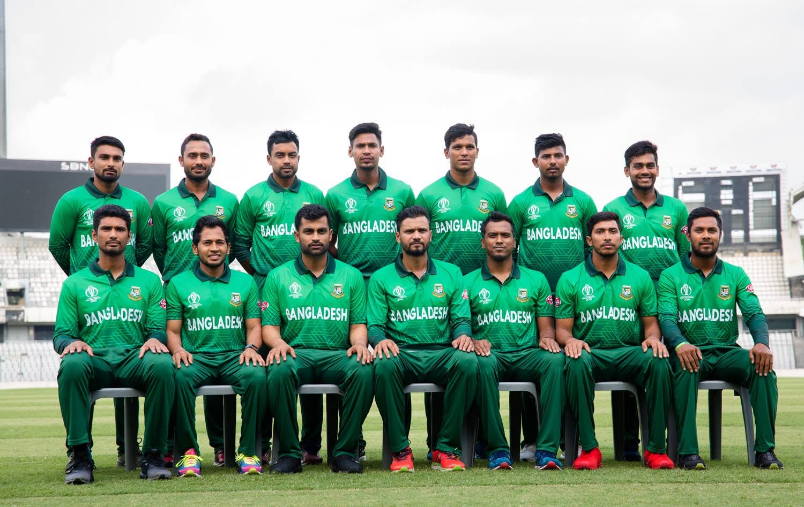
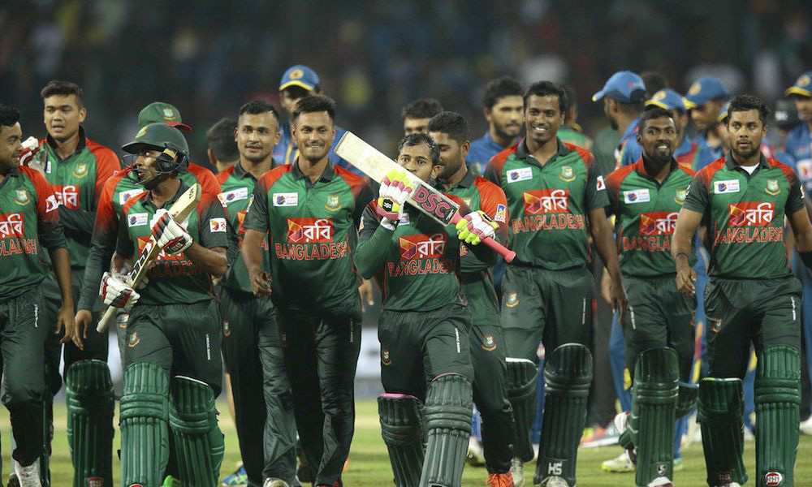

Why "Tigers"?
The Bangladesh national team is nicknamed the Tigers after the Royal Bengal tiger, the national animal of the country. The team is run by the Bangladesh Cricket Board and plays Tests, One Day Internationals and T20 Internationals.
Bangladesh won the ICC Trophy in 1997, which earned a place at the 1999 World Cup, where the team beat Pakistan. In 2000 it became a full member of the ICC and played its first Test match. Since then the Tigers have grown into a side that can beat any opponent on a good day, and in 2015 they reached the World Cup quarter-finals.

